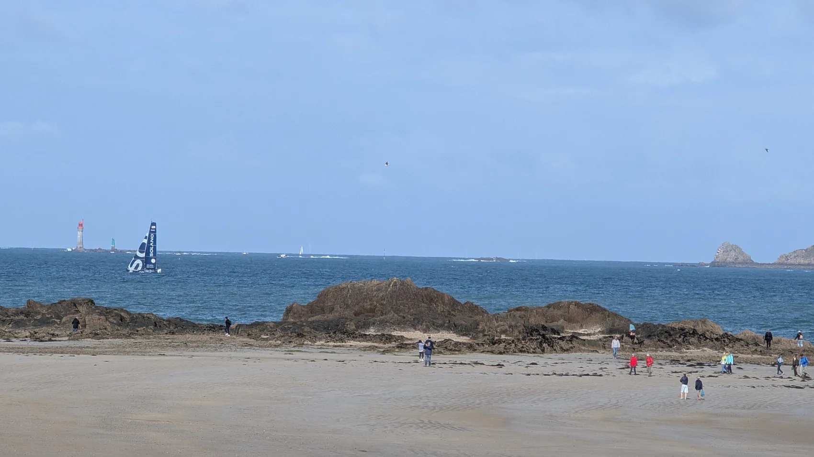
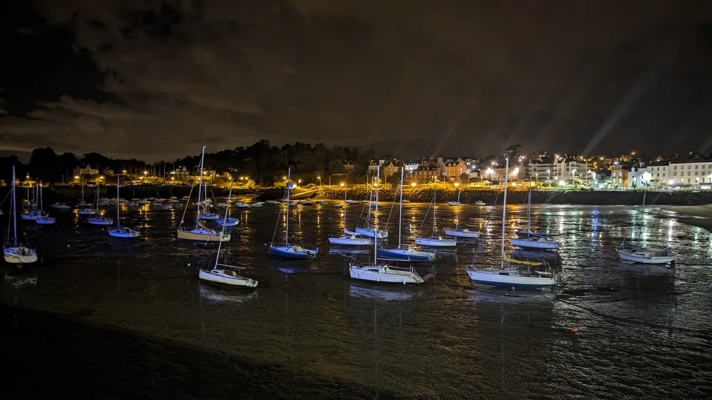

Moi, c’est Julien.
Bienvenue à bord.
Je suis skipper professionnel et j’ai créé Armor Loisirs Nautiques pour partager mon expérience de la mer et accompagner vos projets, du plus simple au plus ambitieux.
La mer,
depuis toujours.
Je suis originaire de Binic. J’ai grandi avec les marées, les ports et les navigations le long de notre côte.
J’ai commencé par les écoles de voile et les activités nautiques à Saint-Quay-Portrieux. Puis, au fil des années, j’ai navigué sur plusieurs bateaux à moteur et voiliers. Chaque navigation m’a appris quelque chose.
Aujourd’hui, j’ai envie de partager cette expérience, avec simplicité et beaucoup d’attention aux personnes que j’embarque ou que j’accompagne.


Partir loin.
Revenir plus riche.
Avec mon épouse et mes enfants, nous avons préparé notre voilier avant de partir pour une année de navigation. Golfe de Gascogne, Gibraltar, Baléares, Maroc, Canaries… Cette aventure a renforcé mon expérience de marin, mais aussi ma manière d’accompagner les autres.
Elle m’a confirmé une chose : on navigue d’autant mieux qu’on prépare, qu’on apprend et qu’on reste à l’écoute de la mer.
Une passion.
Cinq façons de la partager.
Que vous découvriez la baie, achetiez un bateau ou souhaitiez progresser, mon objectif est le même : vous accompagner sérieusement et simplement.
Vous écouter
Chaque projet et chaque niveau de pratique sont différents. Je prends le temps de comprendre les vôtres.
Naviguer avec soin
La préparation, la sécurité et le respect de la mer restent au cœur de mon travail.
Transmettre
J’aime donner des repères concrets et voir les plaisanciers gagner en assurance.
Présentation rédigée à la première personne pour la maquette, à faire relire et approuver par Julien avant publication.
On en parle
simplement ?
Je serai heureux d’échanger avec vous sur votre projet.